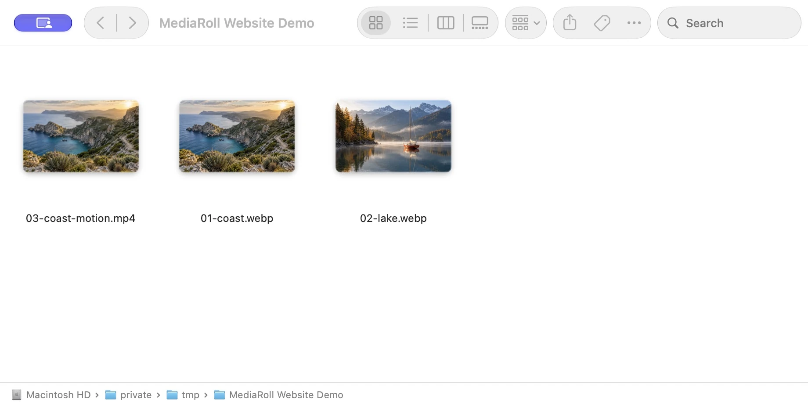
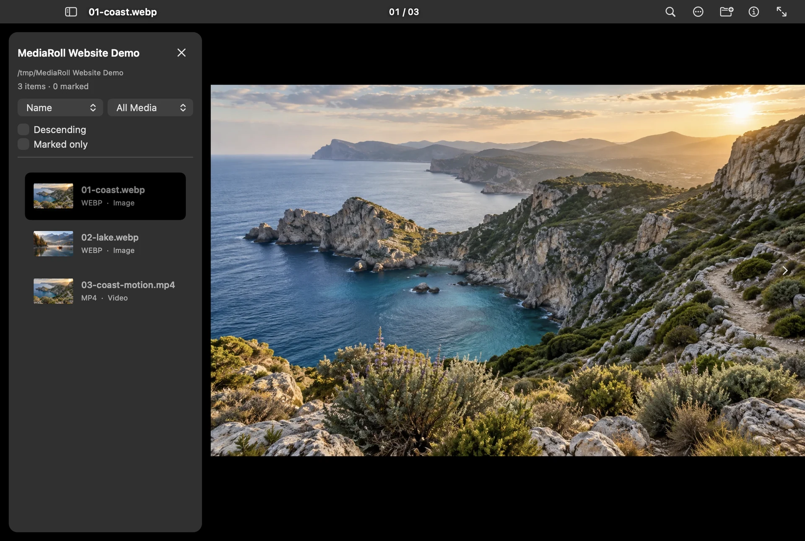

01
Double-click. You’re in.
Set MediaRoll as the default for your favorite file types. Then open any photo or video from Finder.
A one-time setup
Double-click a photo.
Stay for the whole story.
Photos, videos, and audio, right where you left them. Open one and explore everything beside it.
See it in action No imports. No account. Just press →

Your photos and videos, right where you keep them.
Animated walkthrough using real Finder and MediaRoll screens.
Double-click the highlighted photo, then try ← →.You shouldn’t have to open every file to see what’s in a folder. Start with one. Let your curiosity take it from there.
Set MediaRoll as the default for your favorite file types. Then open any photo or video from Finder.
A one-time setupPress an arrow key or swipe your trackpad. Move through the supported files in the same folder, in order.
Grant folder access once when asked.A photo, then a video, then a sound. One viewer keeps it all together, without building another library.
Your files stay where you put them.Stay for a quick look, or get a little closer. The useful things are right there when you need them.
Feels at home.Keyboard shortcuts, trackpad gestures, and a proper fullscreen view.
Stays on your Mac.Media processing happens locally. Your files aren’t uploaded.
Skip the subscription.A 30-day free trial, then an optional one-time Lifetime Unlock.
In Finder, select a file and choose Get Info → Open with → MediaRoll → Change All. Repeat for each file type you want MediaRoll to open by default.
For a quick start without changing defaults, right-click a file and choose Open With → MediaRoll. You can also drag a file into MediaRoll or press ⌘O.
MediaRoll finds supported media in the same folder as the file you opened. If macOS asks for permission, choose Allow Folder. That access is remembered for next time.
Browsing stays in the immediate folder; it doesn’t scan through subfolders.
Common formats include JPEG, PNG, HEIC, WebP, GIF, MP4, MOV, MP3, and M4A. Photos, videos, and audio can share the same browsing flow.
Format and codec support depend on macOS. Camera RAW and PDF are not supported.
Crop, rotate, and other edits change the preview. Export saves a copy to a destination you choose. Export any edits you want to keep before closing the viewer; preview edits are temporary.
Start the 30-day free trial in MediaRoll when you’re ready. It doesn’t charge automatically. After the trial, a one-time Lifetime Unlock is required to open media and start new browsing or editing tasks.
There’s no subscription. The App Store shows your local price before you buy. See the Terms of Use for details.
A better view of the files you already have.